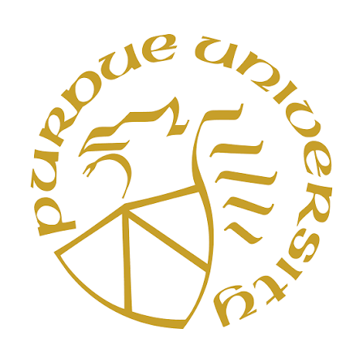
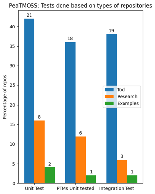
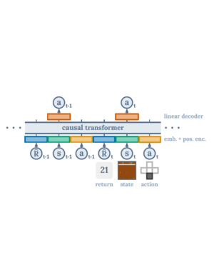
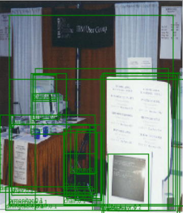
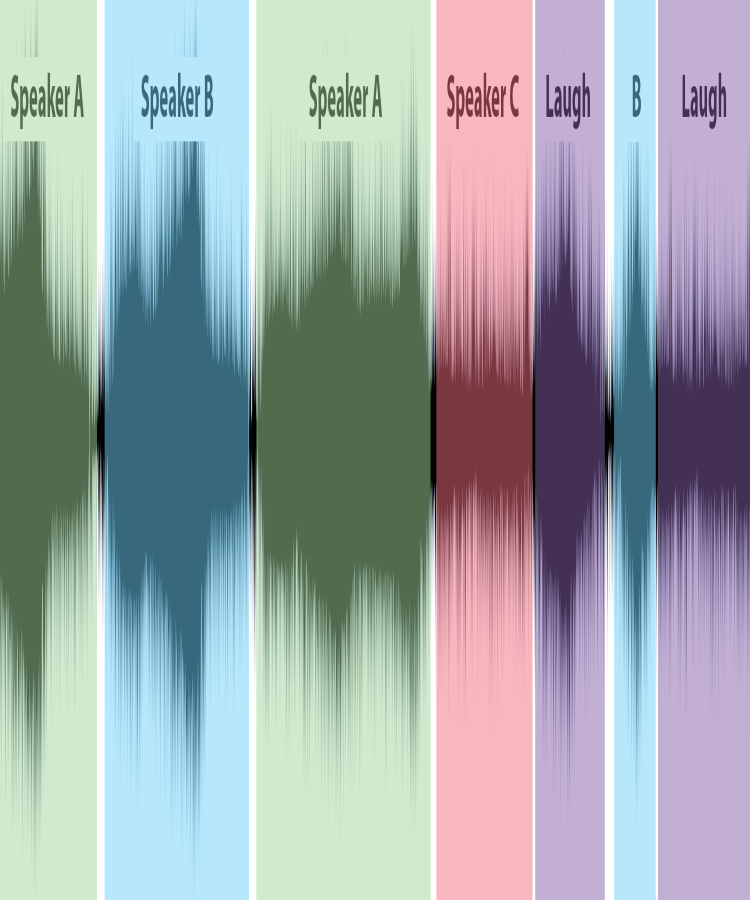
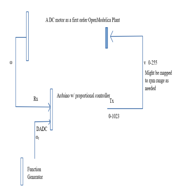

Hi, I am Souradip !!
I am working as a Software Engineer II at SLB in the Industrial IoT Applications team. I completed my master's in Electrical and Computer Engineer from Purdue University (West Lafayette) in 2024 with a focus on Artificial Intelligence. Earlier, I did my bachelor's from Indian Institute of Technology Guwahati in 2019 majoring in Electronics and Communication Engineering. My passion is Computer Science. I am currently interested in building full-stack ML applications and software solutions involving Deep Learning, Generative AI, Agentic AI, LLMs, Cloud Computing and Optimization. Previously, I have worked as a software developer at Adobe Inc. India in the Adobe Commerce Platform team.
Education

Purdue University - West Lafayette
Degree: Master of Science (August 2022 - May 2024)
Major: Electrical & Computer Engineering
- Computational Models and Methods
- Introduction to Artifical Intelligence
- Advanced Software Engineering
- Random Variables and Signals
- Deep Learning & Applications
- Reinforcement Learning
Indian Institute of Technology Guwahati
Degree: Bachelor of Technology (July 2015 - June 2019)
Major: Electronics & Communication Engineering
- Data Structures and Algorithms
- Probability and Random Processes
- Pattern Recognition and Machine Learning
- Introduction to Parallel Computing
- Optimization Methods
- Speech Technology
Experience
Software Engineer - SLB (Schlumberger)
(June 2024 - Present)
Software Engineering Intern - SLB (Schlumberger)
(May 2023 - August 2023)
Software Development Engineer - Adobe Inc. India
(July 2019 - July 2022)
Summer Research Intern - Samsung R&D Institute India
(May 2018 - July 2018)
Summer Fellowship - FOSSEE, IIT Bombay
(May 2017 - July 2017)
Research
PixRec: Leveraging Visual Context for Next-Item Prediction in Sequential Recommendation
Author(s): Sayak Chakrabarty, Souradip Pal
This research proposes PixRec, a vision-language framework that incorporates both textual
attributes and product images into sequential recommendation. The architecture leverages a
vision-language model backbone capable of jointly processing image-text sequences, maintaining
a dual-tower structure and mixed training objective while aligning multi-modal feature
projections for both item-item and user-item interactions. Using the Amazon Reviews dataset
augmented with product images, experiments demonstrate 3× and 40% improvements in top-rank and
top-10 rank accuracy over text-only recommenders, indicating that visual features help
distinguish items with similar textual descriptions. The work outlines future directions for
scaling multi-modal recommender training, enhancing visual-text feature fusion, and evaluating
inference-time performance.
DeepSeekMath Meets Order Book: Group-Aware Policy Optimization for High-Frequency Directional Trading
Author(s): Sayak Chakrabarty, Souradip Pal
This research investigates reinforcement learning for high-frequency trading on limit order books. It pairs an Order-Flow-based state model with policy-gradient methods. Moving beyond value-based RL techniques, the study introduces policy-based methods including vanilla PPO and DeepSeekMath-inspired variants (such as GRPO and GSPO) that leverage group-normalized updates and downside-aware shaping. Backtesting on major financial assets like AMZN, AAPL, and GOOG demonstrates that these group-aware policies deliver significant improvements in net average PnL, profitability, and maximum drawdown compared to Q-learning baselines.
Time-Constrained Recommendations: Reinforcement Learning Strategies for E-Commerce
Author(s): Sayak Chakrabarty, Souradip Pal
This work studies time-constrained slate recommendation via reinforcement learning and reproduces experiments for e-commerce using SARSA and Q-learning.
It provides dataset setup, training, evaluation, and simulation strategies for Alibaba re-ranking benchmarks.
MM-PoE: Multiple Choice Reasoning via. Process of Elimination using Multi-Modal Models
Author(s): Sayak Chakrabarty, Souradip Pal
This study introduces a two-step scoring system to predict answers by eliminating incorrect options in multiple-choice
visual reasoning tasks. It also investigates the performance of open-source multi-modal models like GIT, BLIP etc. on
benchmark datasets like VQA,ScienceQA and AI2D in both single-shot and few-shot settings.
ReadmeReady: Free and Customizable Code Documentation with LLMs - A Fine-Tuning Approach
Author(s): Sayak Chakrabarty, Souradip Pal
This research presents a large language model (LLM)-based application that developers can use as a support tool to
generate basic documentation for any publicly available source code. The tool is a RAG application built on LangChain
using HNSW similarity search algorithm and also allows custom code data generation and QLoRA techniques to support
easy fine-tuning of open-source LLMs like LLama2 and Gemma.
Triple Pendulum Based Nonlinear Chaos Generator and its Applications in Cryptography
Author(s): Bikram Paul, Souradip Pal, Abhishek Agrawal, Dr. Gaurav Trivedi
This research explores post-quantum cryptography methods and proposes a novel approach to
design an encryption scheme based on the chaotic dynamic physical system, which is derived from a mechanical model of a triple-pendulum system
depicting nonlinear dynamics. The proposed cryptography scheme exhibits resistance against various attacks and is validated using benchmark
tests, such as Lyapunov exponents test, bifurcation diagrams, sensitivity to parametric and to initial values, ergodicity, collision test,
NIST, diehard randomness test etc. The proposed algorithm is implemented on an FPGA using System-Verilog.
Projects

Analysis of Testing Patterns For PTM-Enabled Open Source Software Projects
This project shows a study of the common testing patterns (unit, integration, e2e) involved in open source software projects that uses Pre-Trained machine learning models.

Reinforcement Learning via. Sequence Modeling using Decision Transformer
This project involved studying the effect of context length on the variances of the expected returns of the Decision Transformer model in OpenAI Gym environments and Atari games in both online and offline settings.

Box Regression using KL Loss
This project includes several experiments to reproduce the results of the paper "Bounding Box Regression with Uncertainty for Accurate Object Detection" by He et al. The paper introduces a new regression loss function called KL-Loss for accurately predicting the bounding box locations for object detection using localization variances. The methods in the paper were reimplemented in PyTorch and tested on PASCAL-VOC dataset.

Automatic Speech Segmentation
The aim of this project was to segment speech sequences based on speaker transitions, where the number of speakers is not known beforehand. Additionally, it can identify the number of speakers along with the zones where single or multiple speakers are active. Both supervised and unsupervised diarization approaches on LPC(Linear Predictive Coding) features were performed and tested on synthesized audio clips.

OpenModelica HIL Simulation
The problem involves building a hardware-in-the-loop simulation with a DC motor as a software plant, and a proportional control algorithm running on the Arduino. The process is expected to run in real time which means that a delay should not be used. An OpenModelica package was built which is able to conduct such Arduino involving HIL simulation using interprocessing communication.
Skills
Languages
Web Technologies
Libraries & Frameworks
Software Tools
Contact
If you have any questions, or if you just want to say hi, please feel free to send a message or
email me.
To connect with me, please make sure to follow me in any of the social media links below.